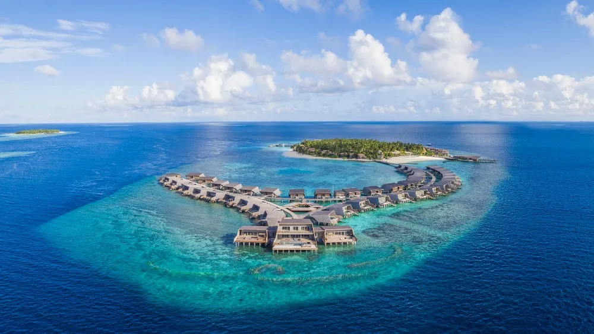
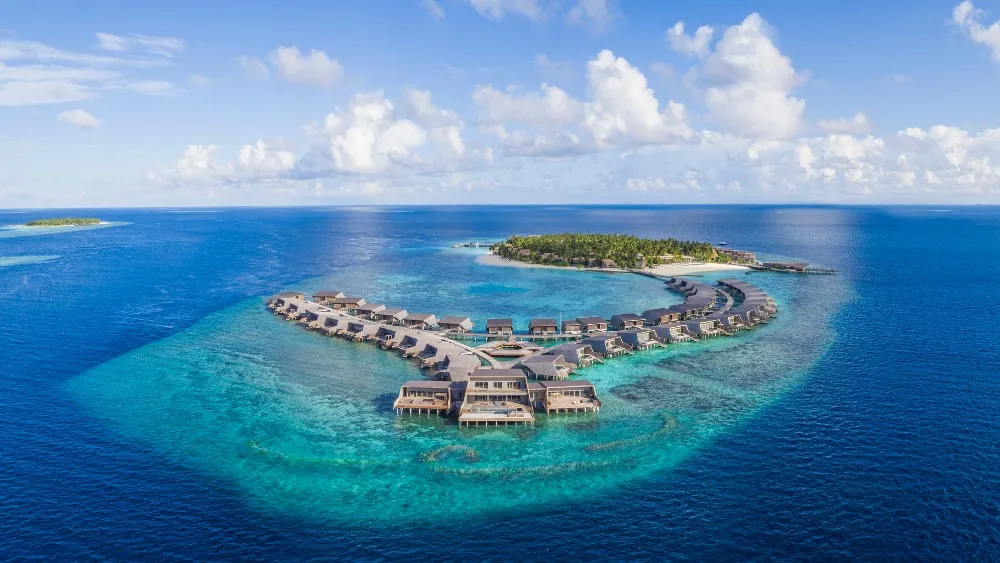

Maldives Itinerary: 5 Days of Paradise
The Maldives offers pristine beaches, clear waters, and luxury resorts. Here's your ideal 5-day itinerary for a tropical escape.
Day 1: Arrival in Malé
- Morning: Arrive in Malé and check in to your resort.
- Afternoon: Explore the island and enjoy local cuisine.
- Evening: Relax at the resort and enjoy the sunset.
Day 2: Water Adventures
- Morning: Go snorkeling or diving in the crystal-clear waters.
- Afternoon: Enjoy a dolphin watching tour.
- Evening: Sunset cruise on the Indian Ocean.
Day 3: Explore Local Islands
- Morning: Visit a local fishing village for cultural exploration.
- Afternoon: Explore more islands and enjoy the local culture.
- Evening: Dinner at a seafood restaurant.
Day 4: Relax at the Resort
- Morning: Spa treatment and yoga session by the beach.
- Afternoon: Enjoy water sports such as jet skiing or kayaking.
- Evening: Sunset walk on the beach.
Day 5: Departure
- Morning: Leisure time at the resort.
- Afternoon: Depart from Malé and return home.
 
